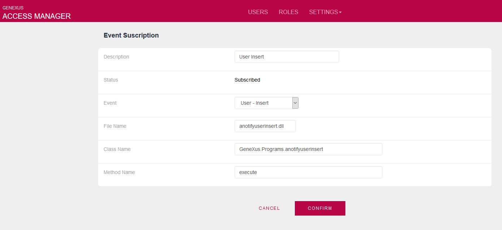
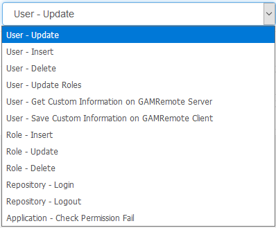

The purpose of the GAM Events subscription is to allow the automatic trigger of additional (external) code when a GAM event is executed. That is, being able to execute a custom event automatically, after a GAM event executes (i.e: the creation of a GAM user). Consider a scenario where you have a Users table, and the user information is redundant with the GAM Users table. You need to The following pseudo-code would be used in such case. &GAMUser.Save() //Call a procedure to make the necessary changes in the Users table. To avoid considering this piece of code in every part where you update a GAM User, the code may be automatically triggered immediately after the GAM user is updated. So the GAM User insert, update, and delete are considered to be events that automatically trigger the piece of code declared to be executed. In other words, you subscribe some events, so that (external) code can be triggered as any of these events is executed. Events you may subscribe
Requirements of a program that subscribes an eventThe way to subscribe an event is to configure a program that will be triggered when the event is executed. The configuration may be done using the GAM API(1) or the GAM Web Backoffice(2). We'll go over this topic in more detail below. The program that considers the GAM events may be developed using GeneXus or not, and it has to fulfill some requirements. First, the signature of the program has to be: (in Character &EventName, in Character &jsonIn, out Character &jsonOut) Where
Secondly, consider how the &jsonIN format should be:
Example IIn the following example, we have subscribed the User_Insert event. In the GAM Web Backoffice(2), go through Settings > Event Subscriptions and define the Event as shown in the following figure. 
|
| Status | It may be {subscribed,unsubscribed}. It has to be subscribed for the procedure to be triggered when the event is executed. |
| Event |
It's a combo box where you can select any of the events available.  |
| File Name | The name of the .dll or .class file which listens to the event execution. |
| Class Name | The name of the program including its package. |
| Method Name | The method of the program in GeneXus it's always "execute". |
The code of the notifyuserinsert procedure is as follows:
Rules: Parm(in:&EventName, in:&jsonIN, out:&jsonOUT);
&GAMUser.FromJsonString(&jsonIN)
&MyUser.Load(&GAMUser.GUID) //&Myuser is based on a BC.
If &MyUser.Fail()
&MyUser = new()
Endif
&MyUser.MyUserGUID =&GAMUser.GUID
&MyUser.MyUserEmail = &GAMUser.EMail
&MyUser.MyUserName = &GAMUser.FirstName.Trim() +" "+ &GAMUser.LastName.Trim()
&MyUser.Save()
If &MyUser.Success()
//Ok
Else
//load &jsonOUT parameter with information about the error.
Endif
See HowTo: Get user's additional information from the GAM Identity Provider for an example of User_GetCustomInfo and User_SaveCustomInfo events.
In the case of the login event the proc subscribed will be triggered at the login (regardless of whether the login is local or not).
In that procedure, you can make additional controls, and allow you to cancel the login and prevent a session from being generated.
Consider the following example code that triggers at the login:
&GAMSession.FromJsonString(&JsonIN)
For each
Where CustomerGUID = &GAMSession.User.GUID
Where CustomerActiveSubscription = True
//OK
When none
&GAMError.Code = GAMErrorMessages.UserInactive
&GAMError.Message = "The user's subscription is not valid."
&JsonOUT = &GAMError.ToJsonString()
Endfor
The JsonOut format must be GAMError. Only if it is empty, it does not cancel the login.
What happens internally is that the session is created, and revoked immediately.
You can define the event subscription as shown in the following example:
&GAMEventSubscription = new() // &GAMEventSubscription is GAMEventSubscription data type
&GAMEventSubscription.Description = "Inspecting the User Login"
&GAMEventSubscription.Event = GAMEvents.Repository_Login
&GAMEventSubscription.FileName = "aNotifyUserLogin.dll"
&GAMEventSubscription.ClassName = "GeneXus.Programs.anotifyuserlogin"
&GAMEventSubscription.MethodName = "execute"
&GAMEventSubscription.Save()
If &GAMEventSubscription.Success()
Commit
// Subscription activation:
&isOK = GAMRepository.SubscribeEvent(&GAMEventSubscription.Id, &GAMErrors)
If &isOK
Commit
Endif
Endif
You may define more than one program to be triggered when the event is executed.
Note that the subscription must be activated using the SubscribeEvent method of GAMRepository.
To include the program subscribed to the event in the same LWU (Logical work unit) of the event, include the Commit command after the code that triggers the event (i.e., &GAMUser.save() or &GAMRole.save()).
On the contrary, if you don't want to include the program in the same LWU, just configure Execute in new LUW property = True for the program.
The Repository_Login and Repository_Logout methods execute an implicit commit, so you don't need to execute it.
It will not be in the same LWU.